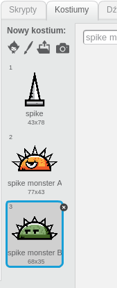

Wstęp
Dzisiaj stworzysz grę, w której zadaniem gracza będzie jak najdłuższe unikanie pojawiających się na jego drodze przeszkód.
Krok 1: Wczytaj zasoby
Zadania do wykonania
-
Utwórz nowy projekt i nazwij go "Biegnij"
-
Pobierz zasoby dla tego projektu ma swój komputer.
-
Plik, który pobrałeś, to archiwum, mieści ono wiele plików, których będziesz potrzebował podczas tworzenia dzisiejszego projektu. Odnajdź folder, do którego pobrałeś archiwum, kliknij na nie prawym przyciskiem myszy i wybierz opcję "Wypakuj pliki". Powinieneś utworzyć nowy folder z zasobami. Jeśli coś poszło nie tak, poproś lidera klubu o pomoc.
Zapisz swój projekt
Krok 2: Przygotujmy duszki i scenę
Zadania do wykonania
-
Najpierw scena. Wczytaj tło, które wcześniej pobrałeś. Wybierz opcję Nowe tło > Wczytaj tło z pliku, odnajdź katalog z zasobami i wybierz plik "tło-projektu.png". Teraz Twoja scena jest niebieska, prawda?
-
Utwórz nowego duszka poprzez opcję wczytania duszka z pliku. Nazwij go "Postać". Z katalogu z zasobami wybierz zasób "frame-1.png". Następnie przejdź do zakładki "Kostiumy" i wczytaj kolejne trzy kostiumy duszka - "frame-2.png", "frame-3.png" i "frame-4.png".
Tak powinna wyglądać lista kostiumów:
-
Utwórz kolejnego duszka wczytując duszka z pliku. Tym razem znajdź plik "full-background.png", to będzie fragment tła dla naszej gry. Umieść nowego duszka przy dolnej krawędzi sceny.
-
Nasza postać musi mieć jakieś podłoże, po którym będzie biegać. Wybierz opcję tworzenia nowego duszka z pliku, odnajdź plik "layer-2.png" i wczytaj go.
-
Jeszcze jedna rzecz! Potwory. Potrzebujemy kolejnego duszka, znów wybierz opcję wczytania duszka z pliku i znajdź "spike.png", wczytaj ten plik. Przejdź do zakładki kostiumy nowego duszka i dodaj kolejne kostiumy. W folderze z zasobami jest jeszcze kilka grafik, które przedstawiają różne potwory, wybierz któreś z nich jako nowe kostiumy.

-
Podsumowując: powinieneś mieć niebieską scenę, na której znajduje się kolorowe tło, podłoże, postać i potwór. Czy wszystko się zgadza? Czas na odrobinę kodu!
Zapisz swój projekt
Krok 3: Zmienne
Zadania do wykonania
-
Będziemy potrzebować kilku zmiennych... Na początek utwórz zmienną "wynik", ona będzie przechowywać informacje o wyniku gracza.
Twój wynik będziemy chcieli zaprezentować graczowi na sam koniec, do tego będzie potrzebna nowa zmienna "informacja o wyniku". Utwórz taką zmienną.
-
Dodaj zmienną "gra trwa". Ta zmienna będzie przyjmować wartości "tak" i "nie". Oznaczać ona będzie, czy gra aktualnie trwa, czy może się już zakończyła, kiedy np. gracz uderzył w potwora.
-
Gracz będzie mógł wykonywać skoki swoją postacią. Do tego potrzebne będą dwie zmienne: "wysokość skoku" i "grawitacja". Utwórz takie zmienne.
Dodaj też zmienną "prędkość", ponieważ nasza postać przez większość czasu będzie biegła przed siebie z określoną prędkością.
-
Potrzebujemy też zmiennej "czas oczekiwania". Ona będzie decydować o tym, co jaki czas pojawi się nowy potwór.
-
Czy Ty też masz takie zmienne w swoim projekcie? Pamiętaj, żeby zmienne "wynik" i "informacje o wyniku" miały postać "duży odczyt". Ukryj wszystkie zmienne poza zmienną "wynik", którą ustaw w górnym prawym rogu sceny.
Zapisz swój projekt
Krok 4: Kod dla sceny
Zadania do wykonania
-
Tradycyjnie scena będzie kontrolować przebieg gry. Na początku będziesz musiał zresetować wartość wszystkich zmiennych. W tym celu zdefiniujmy nowy blok, nazwijmy go "start gry" i podepnij do niego następujące skrypty:
-
Dzięki temu, kiedy gracz kliknie w zieloną flagę i rozpocznie działanie gry, scena ustawi początkowe wartości zmiennych, takie jak wynik, prędkość (na 5), odpowiednią wysokość skoku, grawitację. Poza tym scena również pokaże zmienną "wynik" i ukryje zmienną "informacja o wyniku". I najważniejsze - scena przestawi zmienną "gra trwa" na "tak".
Na koniec scena nada komunikat "start".
-
Scena również musi kontrolować wynik. W grze wynik będzie zwiększał się o jeden co sekundę. Dodatkowo musimy zwiększać prędkość, żeby rósł poziom trudności gry (im szybciej biegnie postać, tym trudniej jest omijać przeszkody). To wszystko dzieje się po odebraniu komunikatu "start", jeżeli "grwa trwa" jest ustawiona na "tak".
Oto kolejna porcja kodu dla sceny:
Zapisz swój projekt
Krok 5: Tło i podłoże
Zadania do wykonania
-
Przejdź do duszka "tło" (to ten duszek z kostiumem przedstawiającym góry) i dodaj blok kodu, który sprawi, że po otrzymaniu komunikatu "start" duszek pokaże się.
-
Czas na trudniejsza porcję kodu.
Nasze podłoże powinno na początku gry ustawić się na odpowiedniej pozycji, a następnie, kiedy otrzyma komunikat "start", zacząć przewijać się w lewą stronę. Ponieważ Scratch nie umożliwia nam przygotowania dowolnie długiej sceny, musimy to zasymulować. Dlatego to nie nasza postać będzie biegła w prawą stronę, ale wszystko inne będzie poruszało się w lewo (czyli podłoże i potwory). To prosta sztuczka, chociaż kod może wyglądać na odrobinę skomplikowany. W razie pytań, poproś o wyjaśnienie lidera klubu. Oto kod dla duszka "podłoże" (to ten duszek z podłużną belką przypominającą ziemię):
Zapisz swój projekt
Krok 6: Postać
Zadania do wykonania
-
Czas na kod dla postaci. Pierwszym zadaniem jest ustawienie postaci w odpowiednim miejscu na początku gry oraz przygotowanie pętli, dzięki której będziemy zmieniać kostium tak, żeby nasza postać biegła.
Druga część kodu jest bardziej skomplikowana. Kiedy wciśniemy spację, postać powinna podskoczyć. Do tego wykorzystamy znaną sztuczkę z grawitacją. Użyjemy też zmiennej "wysokość skoku". Sprawimy, aby nasza postać płynnie wznosiła się i opadała.
Co więcej, kiedy postać dotknie potwora, powinna nadać komunikat "koniec".
-
Na komunikat o końcu gry powinny zareagować wszystkie duszki. Dodaj poniższy kod dla każdego duszka:
Natomiast scena musi jeszcze wykonać dodatkową pracę, oto kod dla niej:
Zauważyłeś pewnie, że scena przestawi naszą główną zmienną na "nie", dzieki czemu inne duszki będą wiedziały, że gra się już nie toczy i nie powinny wykonywać swoich zadań. Poza tym ukryjemy zmienną "wynik" i pokażemy "informacja o wyniku" na środku sceny. Niedługo przekonasz się dlaczego.
Zapisz swój projekt
Krok 6: Potwory
Zadania do wykonania
-
Nasza postać potrafi już biegać i skakać. Podłoże przesuwa się w lewo, ale wciąż nie mamy potworów, które będą stanowiły przeszkody!
Kod dla duszka "potwór" będzie bardzo prosty. Chcemy, żeby co jakiś czas pojawiał się nowy potwór i przemierzał planszę z prawej do lewej strony. Jeśli nasza postać nastąpi na niego, gra się skończy.
Musimy więc ukryć potwora na początku gry, a następnie w pętli "zawsze" klonować go co jakiś czas.
Każdy klon wylosuje sobie nowy kostium (z tych, które posiada potwór i które dodawałeś na początku), pojawi się przy prawej krawędzi sceny i zacznie przemieszczać się w lewą stronę z odpowiednią prędkością.
Kod powinien wyglądać tak jak poniżej. Wartości pokazane na przykładzie są dobrane w ten sposób, żeby gra nie trwała zbyt długo. Mój rekord to 37 punktów przy takich ustawieniach. Spróbujesz go pobić? Możesz też zmienić np. wartości graniczne w bloku "losuj" lub ustawić inną prędkość na początku gry i sprawdzić jak zachowa się potwór.
Zapisz swój projekt
Krok 7: Koniec gry
Zadania do wykonania
-
Teraz obsłużymy koniec gry. Chcielibyśmy pokazać graczowi informacje o tym, ile punktów uzyskał i dać możliwość rozpoczęcia gry od nowa. W tym celu utwórz dwa noweg duszki. Jeden to będzie przycisk "Od nowa", drugi to będzie napis "Koniec gry. Wynik:". Duszki ustawione na planszy będą wyglądać tak jak poniżej. Zauważ, że na planszy widać też zmienną "informacja o wyniku". Spróbuj uzyskać podobny efekt:
-
"Koniec gry" będzie miał bardzo prosty kod:
-
Kod dla przycisku "Od nowa" również nie jest skomplikowany:
-
Ostatnia rzecz, kod dla sceny, który sprawi, że gra rozpocznie się od nowa po wciśnięciu przycisku:
Zapisz swój projekt
Zadania dodatkowe
-
Dodaj dźwięk w momencie uderzenia postaci w potwora oraz muzykę, która będzie grana podczas trwania rozgrywki.
-
W katalogu z zasobami znajdziesz grafiki chmur. Dodaj nowego duszka, nazwij go "chmury" i spraw, żeby co jakiś czas na niebie przelatywała chmura. W tym celu możesz wykorzystać np. kod potwora, działa on przecież bardzo podobnie!
-
W miare upływu czasu coraz trudniej jest przeskakiwać potwory. Możesz dla ułatwienia wprowadzić drugi rodzaj skoku, który będzie pozwalał przeskoczyć te niższe przeszkody po naciśnięciu jakiegoś klawisza. W tym celu będziesz musiał wykorzystać istniejący kod skoku, ale zmodyfikować wartość zmiennej "wysokość skoku" przed rozpoczęciem akcji (zmienna powinna mieć mniejszą wartość).